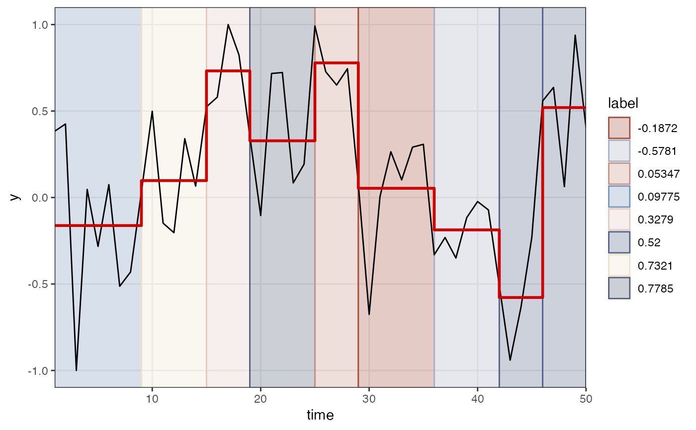

Find change indices
Usage
ts_changeindex(
y,
returnRectdata = FALSE,
groupVar = NULL,
labelVar = NULL,
discretize = FALSE,
nbins = 5
)Arguments
- y
An indicator variable representing different levels of a variable or factor
- returnRectdata
Return a dataframe suitable for shading a
ggplot2graph withggplot2::geom_rect()- groupVar
Pass a value (length 1) or variable (length of y) that can be used as a variable to join the indices by if
returnRectdata = TRUE- labelVar
If
yis not a character vector, provide a vector of labels equal tolength(y)- discretize
If
yis a continuous variable, settingdiscretize = TRUEwill partition the values ofyintonbinsnumber of bins, each value ofywill be replaced by its bin number.- nbins
Number of bins to use to change a continuous
y(ifdiscretize = TRUE) into a variable withnbinslevels
Value
Either a vector with the indices of change in y, or, a data frame with variables xmin,xmax,ymin,ymax,label
See also
Other Time series operations:
ts_center(),
ts_checkfix(),
ts_detrend(),
ts_diff(),
ts_discrete(),
ts_duration(),
ts_embed(),
ts_integrate(),
ts_levels(),
ts_peaks(),
ts_permtest_block(),
ts_permtest_transmat(),
ts_rasterize(),
ts_sd(),
ts_slice(),
ts_slopes(),
ts_standardise(),
ts_sumorder(),
ts_symbolic(),
ts_trimfill(),
ts_windower()
Examples
library(ggplot2)
set.seed(1234)
yy <- noise_powerlaw(standardise = TRUE, N=50, alpha = -1)
tr <- ts_levels(yy, doTreePlot = TRUE)
#> Skipping adjustment by argument minChange...
breaks <- ts_changeindex(tr$pred$p, returnRectdata = TRUE)
breaks$cols <- casnet::getColours(length(breaks$label))
ggplot(tr$pred) +
geom_rect(data = breaks,
aes(xmin = xmin, xmax=xmax, ymin=ymin, ymax=ymax, colour = label, fill = label),
alpha = .3) +
scale_colour_manual(values = breaks$cols) +
scale_fill_manual(values = breaks$cols) +
scale_x_continuous("time", expand = c(0,0)) +
geom_line(aes(x=x,y=y)) +
geom_step(aes(x=x,y=p), colour = "red3", size=1) +
theme_bw() + theme(panel.grid.minor = element_blank())
#> Warning: Using `size` aesthetic for lines was deprecated in ggplot2 3.4.0.
#> ℹ Please use `linewidth` instead.
